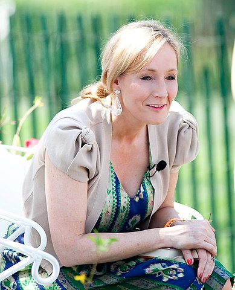

Origem de Harry Potter
Em 1990, J.K. Rowling estava em um trem indo de Manchester para Londres quando a ideia para Harry simplesmente "apareceu" em sua cabeça. Rowling conta sobre a experiência em seu website:
"Tenho escrito continuamente desde os seis anos de idade mas nunca estive tão excitada com uma ideia antes. [...] Eu simplesmente sentei e pensei, por quatro horas (trem atrasado), e todos os detalhes borbulharam em meu cérebro e este garoto de óculos e cabelos pretos que não sabia que era um bruxo tornou-se mais e mais real para mim."
Naquela noite, a autora começou a escrever seu primeiro romance, Harry Potter e a Pedra Filosofal, e um plano que incluía os enredos de cada uma dos sete livros, além de muita informação biográfica e histórica sobre seus personagens e universo.
Nos seis anos seguintes, que incluíram o nascimento de sua primeira filha, o divórcio de seu primeiro marido e uma mudança para Portugal, Rowling continuou a escrever Pedra Filosofal.